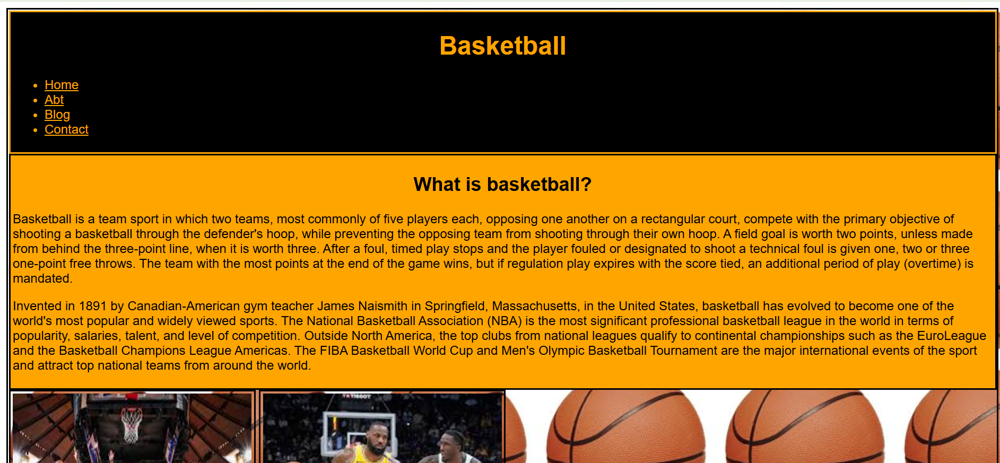
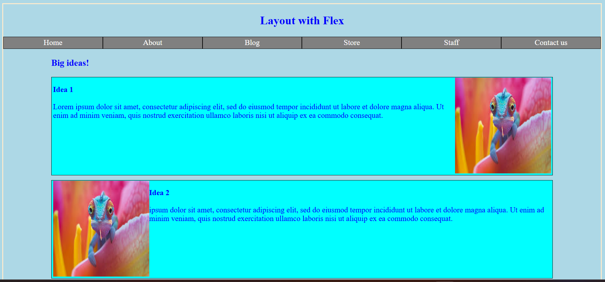
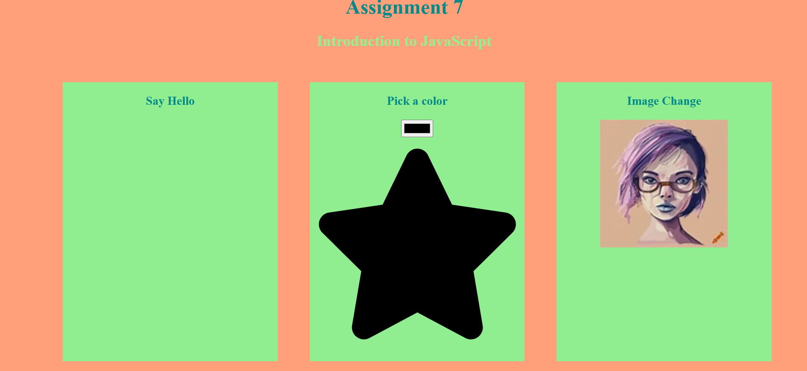
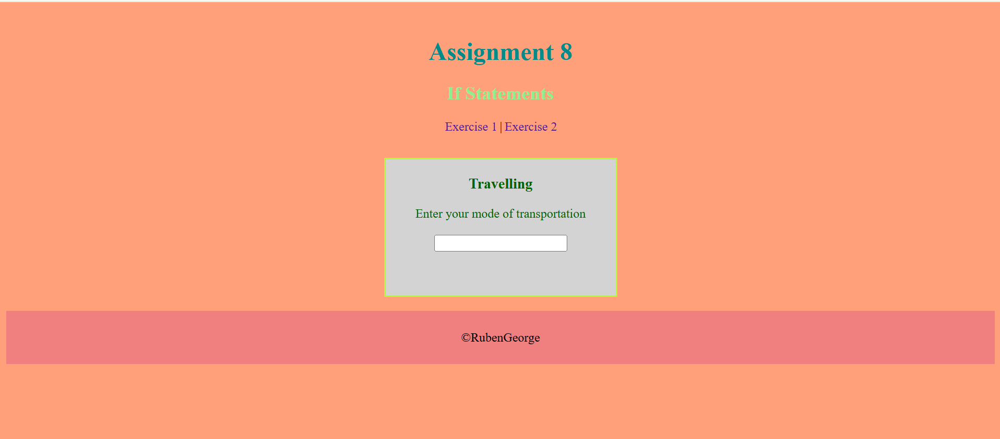
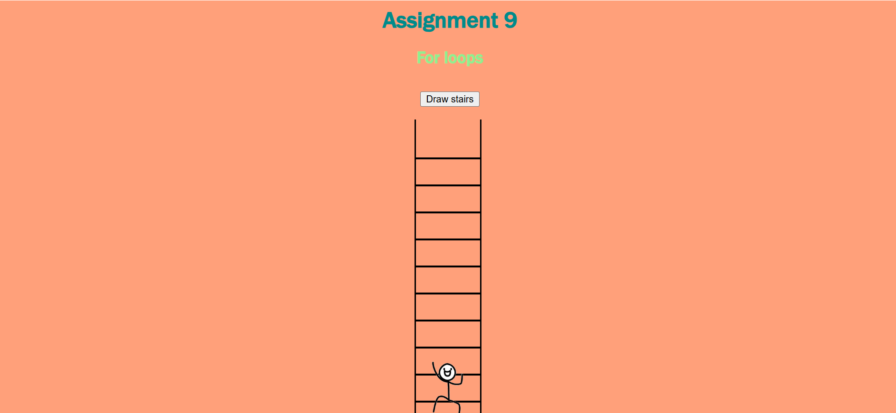

- Basic HTML

In this assignment I used basic HTML methods to create a webpage on cyberbullying. I included information such as the definition, side-effects, how to deal with the bullying, etc. I used tags such as head tags, image tags, table tags, paragraph tags, etc.
- Basic CSS
In this assignment I implemented basic CSS techniques to design a webpage that I created on basketball. I added background colors, padding, borders, and used tags like divider, navigator, etc.
- Page layout
In this assignment I will be using different flex techniques and alignment techniques to properly adjust the layout of the page and make it more appealing.
- JavaScript
In this assignment I will be using different JavaScript techniques to implement "hello" printing button, a star color changing button, and an image changing button.
- Conditionals
In this assignment I will be using JavaScript techniques such as if conditionals to implement navigation arrow for links on mobile resolutions, images of vehicles that pop up on typing the name and 3 color implementing buttons that changes the color of a star.
- For loops
In this assignment I will be using JavaScript techniques such as for loops to implement a program where a stickman is climbing up a ladder